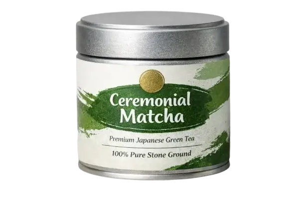
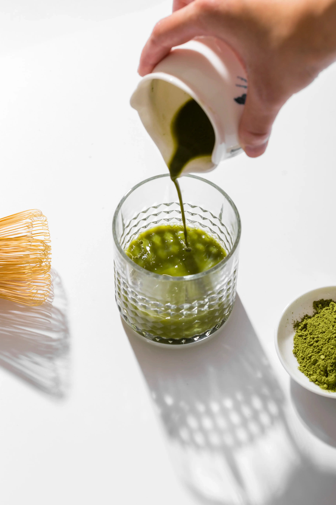
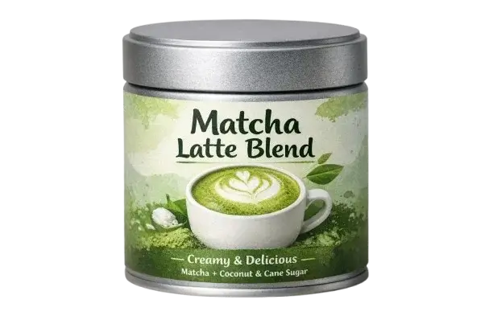
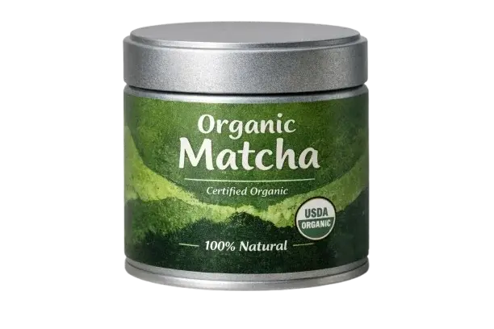
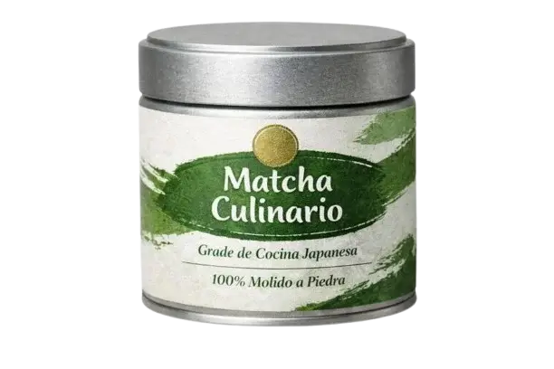
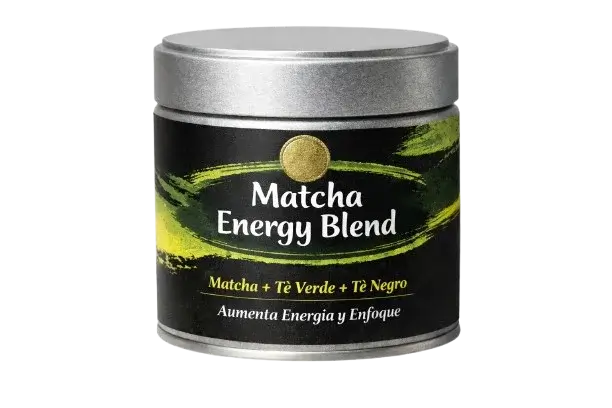
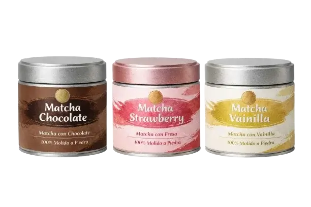
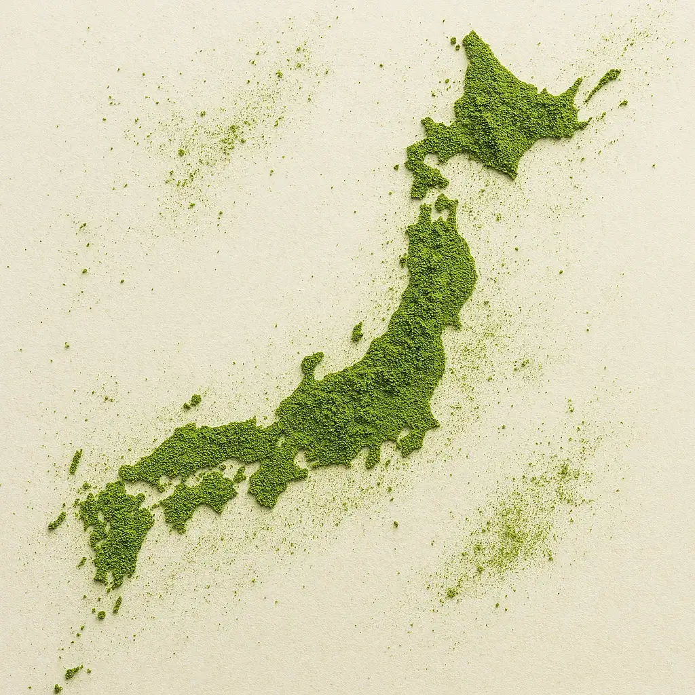
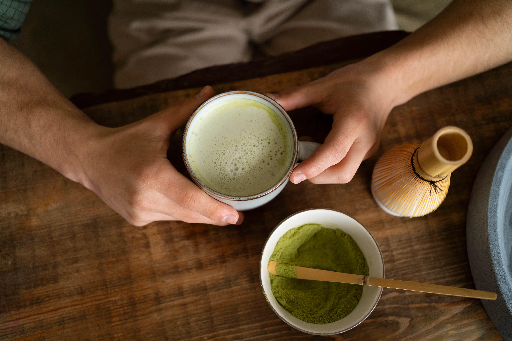

Matcha Ceremonial
Matcha de alta calidad para ceremonias.

30g
50g
100g

Matcha de alta calidad para ceremonias.

Perfecto para bebidas cremosas.

100% té verde orgánico en polvo.

Perfecto para uso en recetas.

Mezcla energizante con matcha y guaraná.

Mezcla de sabores deliciosos.


El matcha es rico en antioxidantes que ayudan a combatir los radicales libres.
Proporciona energía duradera sin los picos de cafeína de otras bebidas.
Contiene L-teanina, que promueve la relajación y mejora el enfoque mental.
Tamiza, bate y disfruta de la taza perfecta de matcha.

"El mejor matcha que he probado, ¡y el servicio al cliente es excelente!"
"Me encanta la variedad de productos y la calidad es insuperable."
"El matcha energy blend me da el impulso perfecto para mis entrenamientos."